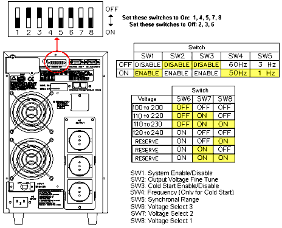

This procedure provides instructions for installing and connecting the DX3000b Uninterruptible Power Supply (UPS) for the DxI instrument.
Figure 293: UPS rear panel including the voltage setting information

Table 72: DS 3000b UPS voltage selection (rear switch panel for 230 V AC output)
Switch ID
Definition
Setting
Comment
SW1
Sytem On
ON
Enables the UPS operation. The default is OFF for shipping.
SW2
Fine Tune
OFF
Disables panel button setting of output voltage.
SW3
Cold Start
OFF
Disables UPS start on battery with no AC power input.
SW4
Frequency
ON
Selects 50 Hz output frequency for cold start.
SW5
Synchronized Range
ON
Selects 1 Hz Sync frequency input/output. Choose 3Hz if AC source is unstable.
SW6
Voltage Select (Bit 3)
OFF
SW7
Voltage Select (Bit 2)
ON
SW8
Voltage Select (Bit 1)
ON
For 230 V AC output. Combination of the three switches.
Unpack the DS 3000b UPS and configure the DS 3000b UPS input and output voltages, by setting the rear panel switches.
Install the UPS.
Position the UPS in the intended location and connect the power cord to the wall outlet.
Power on the main power switch located on the UPS rear panel.
Note: The unit beeps and the lights on the front panel flash momentarily while the unit performs self-tests.
Connect the DxI instrument to the UPS.
Note: Do not connect the laser printer to the UPS. The warm-up period of the printer before printing can cause the UPS to beep because of an overload signal.
Note: The UPS internal batteries charge while the unit operates. An initial charge time of 24 hours is necessary to obtain maximum performance before the UPS is used for battery backup.
Power on the DxI system and confirm that it operates when powered through the UPS.
Confirm that the status indicators on the front panel of the DS 3000b UPS are normal.
Run / Fault Indicator: Green
AC Line Indicator : Green (indicator off = no input power)
Load Indication: Less than 50% load (LEDs indicate 15% each. Three lit = 45% of available current.)
Verify the proper operation of the DS 3000b UPS, after the UPS has been powered on and allowed to charge for 24 hours.
Power off the main power switch on the UPS, and confirm that the DxI operates when powered by the battery backup.
Note:
The AC line indicator LED will turn off, and the UPS will beep.
The manufacturer recommends an initial charge time of 24 hours to ensure proper battery performance before the UPS is used as a battery backup.
After using battery backup for 6 minutes, confirm that the DxI system is operating normally and that the battery capacity does not drop below 50%.